チョンボ地蔵/新潟県
新潟県の栃尾（現長岡市）。
雁木の町並みが有名だが、今では何故か油揚の町として有名になっちゃいましたね。
そんな四方を山に囲まれた栃尾の外れにある音子神社の一画に一風変わったお地蔵さんがいる。
どこにいるか判りますかあ？
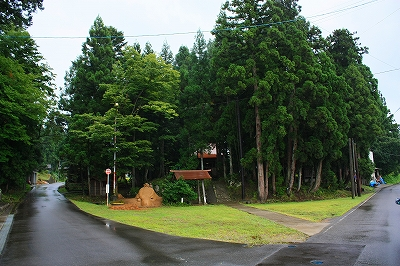
左側の。
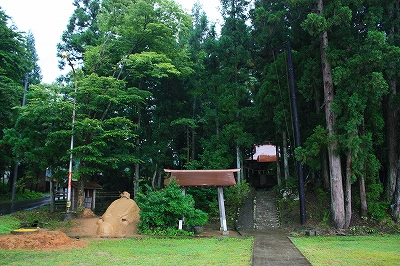
いた！
こんなお地蔵さん、ありえねえ！
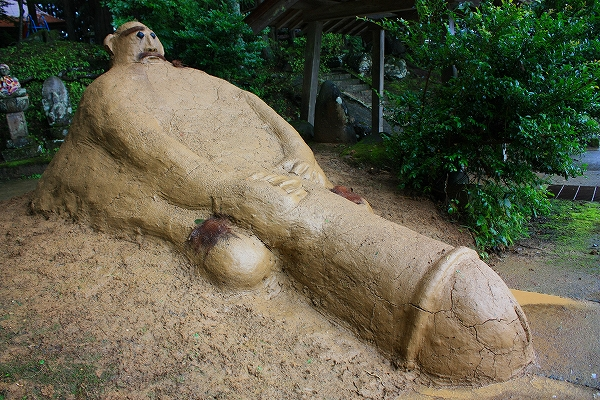
チョンボ地蔵、というのだそうな。
チョンボとは麻雀の8000点罰符、のアレじゃなくて、多分「珍棒」の意。つまりチンボ地蔵というわけ。
神社の入口に自分の身体とほぼ同じサイズのモノを誇示するお地蔵さん。シュールといわずして何といおう。
つか、デカ過ぎだよ…
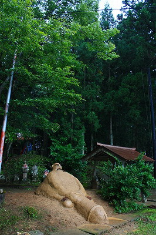
お地蔵さんは赤土で出来ている。
年に一度、8月末に地元の方々が作るのだ。
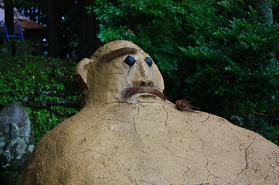
目は石、眉と髭は棕櫚の皮だと思う。…ん？地蔵に髭？
ここを訪れたのは作られてから数日後。その時点で早くも片眉が落ち、耳も削げ、全体にヒビが入っている。
恐らく数週間もして台風でも来ればただの土塊になってしまうのであろう。
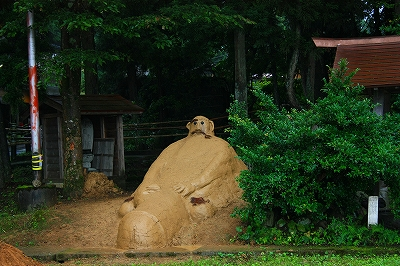
なんともとぼけた味わいのチョンボ地蔵さん。
釈迦入滅から弥勒菩薩出現までの57億年をロングリリーフするお方がこんなんでいいのか。
…ここは賽の河原…
子；「ひとつ積んでは母のため〜…あっ！鬼が来た！逃げろ。」
鬼；「オラオラオラ〜ッ！辛気臭く石なんか積むんじゃねえ！ぶっ壊してやる！」
チャララララ〜ン、チャンチャチャ〜ン（テーマソングね）
地；「チョット待ちたまえ！」
鬼；「何だオマエ！」
地；「私は幼子を守る正義の味方、チョンボ地蔵である！」
子「…ってお地蔵さまっ、陰茎が丸出しですけどっ！」
鬼「…おま、チョットそれはマズいんじゃないか。幼児の前で。俺らも一応気を使って虎のパンツ履いてるわけだし…」
地；「そうか、現世では不適切であったか…しょぼーん。で、ぶら〜〜ん」
…てな事態に陥る可能性大ではないか。
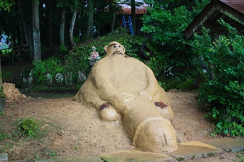
このように公衆の面前で珍棒をことさら強調しているのだからこちらも敢えて強めて撮ってやるぞ。
接近、激写！参ったか！
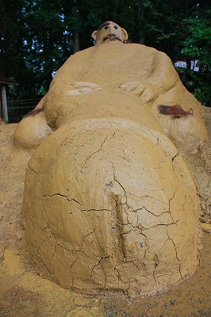
…さて、少し冷静になって観察してみよう。
近づいてみると意外と大きい。高さは2メートル程だが、形状が形状だけに長さは結構ある。
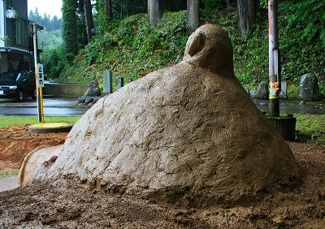
見れば赤土をペタペタ塗った手の痕跡が見えるではないか。
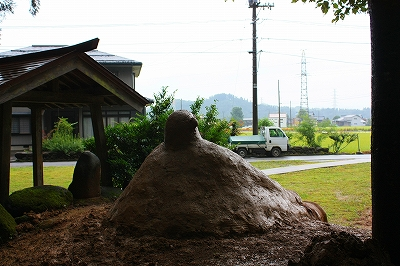
表面は滑らかに仕上がっている。土質もさることながら丁寧に作られていることが判る。
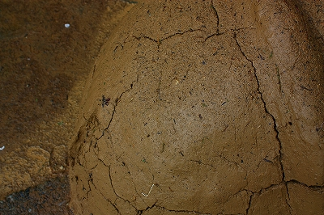
さて、そろそろ主題に入ろう。
このチョンボ地蔵の正体は何か？
殊更強調した男根、辻に立つ巨大な神像…
ここで思い出されるのが、以前紹介した新潟県阿賀町に点在するショウキサマの存在である。
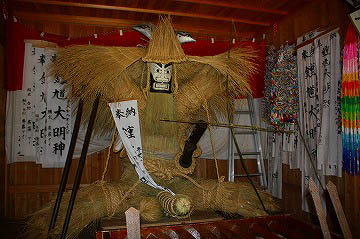
↑参考；阿賀町大牧のショウキサマ
私見だが、ここのチョンボ地蔵は阿賀のショウキサマ習俗の影響を受けた賽の神的性格を持つ神像と考えられる。
ショウキサマの習俗が現在でも数例現存している阿賀町とここ栃尾は直線距離にして50キロ足らず。
この仮説は充分現実味がある話だ。
いやむしろそれ以外にこの特異な像の存在の由来は説明できない。
しかし、もしそうだとすると2つの疑問が浮かび上がる。
1；阿賀のショウキサマやそのルーツと目される東北地方の人形道祖神は藁で作られたものが殆んどなのに何故ここのチョンボ地蔵は土で出来ているのか？
2；他の地域で見られる境神、道祖神、賽の神の類は「オニンギョウサマ」「ニオウサマ」「カシマサマ」「ショウキサマ｣といった呼称に大別できるのに、何故ここのだけがチョンボ地蔵という呼び名なのか？「チョンボ」も「地蔵」も全く他との共通性が感じられくないすか？
しかしここでさらに勝手に仮説を立てさせていただく。
全国の常設系の人形道祖神の神像の分布は東日本に集中している。
いわば新潟県下における人形道祖神の習俗はメインストリームから派生した分派と考えられる。
ショウキサマ習俗が現存する阿賀町はかつて会津藩の領地だった歴史があるので東北文化圏と考えることも出来るが、ここ栃尾は越後の地。人形道祖神文化圏から見れば完全アウェイの地といえよう。
阿賀から伝わった習俗が越後の習俗とミックスして独自の進化を遂げたカタチなのではなかろうか、と私は考える。
勿論何の根拠も無いよ。ただ、状況証拠からいうとそういわざるを得ない、と。
また土を素材に使うのも、石像や石碑として永久的に道祖神を祀るのではなく、毎年再生するという点で、1年間のムラの災厄を封じ込めた拠り代を解体して再構築するショウキサマのような藁人形系の道祖神に似ているではないか。
そしてこの地ではことさら男根を強調する風習があるのだが、それは後の話ということで。
境内の御手洗池。
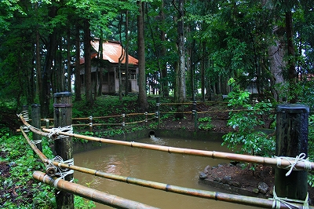
チョンボ地蔵の後ろには小さな祠があり石像が祀られていた。
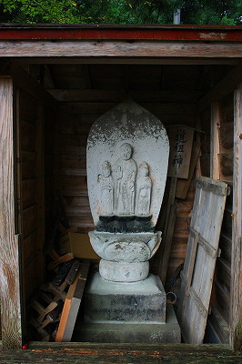 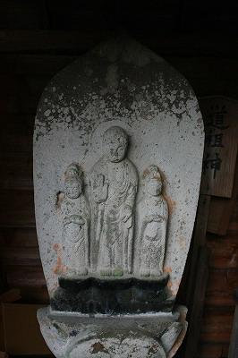
釈迦三尊像なのだろう。
その後ろには「道祖神」と書かれた看板が。
栃尾観光協会のサイトで確認すると、チョンボ地蔵を作った当日、この看板を掲げてある。
ああ、やっぱこれは地蔵じゃなくて道祖神なんだ。
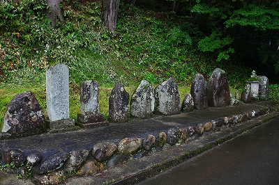
神社の脇には庚申塔が並んでいた。
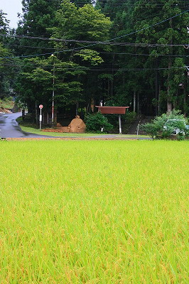
子孫繁栄の神なのだろう。しかしそれは同時に農作物の特に五穀豊穣の神でもあるはず。
夏の終わり、チョンボ地蔵の見つめる田んぼでも稲穂がやや色付いて来ていた。
2009.08.
珍寺大道場 HOME